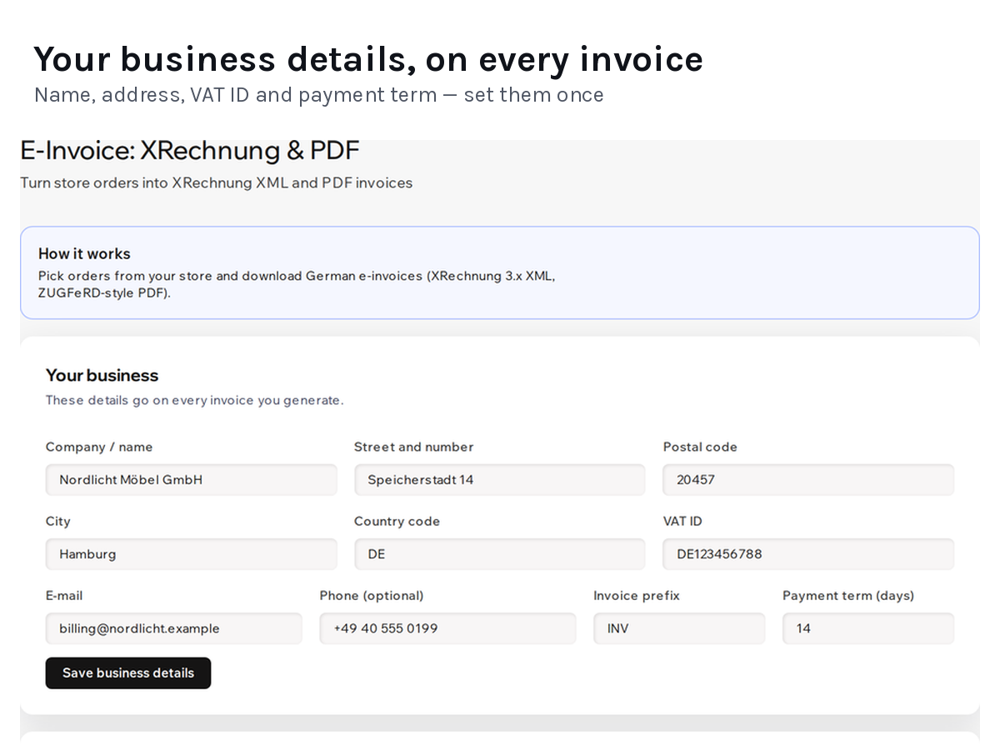

E-Invoice: XRechnung & PDF
XRechnung XML and PDF invoices from your orders
- XRechnung 3.0 XML from any store order
- PDF with the invoice XML attached (Factur-X)
- Buyer VAT ID and Leitweg-ID on every file
- Free covers 10 invoices a month

What it does
Business and public-sector buyers increasingly ask for an XRechnung: a structured XML invoice, not a PDF. Your store's orders hold the numbers, but nothing turns an order into that file.
This app adds a page to your site's dashboard. It reads your store orders and turns any of them into a XRechnung 3.0 UBL invoice in one click. Line items, tax rates, buyer name, address and VAT ID come from the order; the Leitweg-ID or buyer reference is typed in and checked.
Download the XML and send it to the buyer or their portal. Premium also writes a PDF with the same XML attached as factur-x.xml, plus a monthly ZIP with every invoice the app issued that month.
Invoice numbers are proposed as prefix-year-000N and continue from the app's own ledger; you can edit each one. Business details — name, address, VAT ID, contact — are saved once and used on every invoice.
The free plan makes 10 invoices a month. Premium lifts the limit and adds the PDF, saved buyer profiles and the monthly batch, for $6 per month or $5 per month billed yearly.
The app produces the file; it does not send it to a tax portal. That step stays with you, as it does today.
Price
Free
Premium
$6/month, or $5/month billed yearly ($60/year). Unlimited invoices, PDF with the XML attached, Leitweg-ID check, saved buyers, monthly batch ZIP